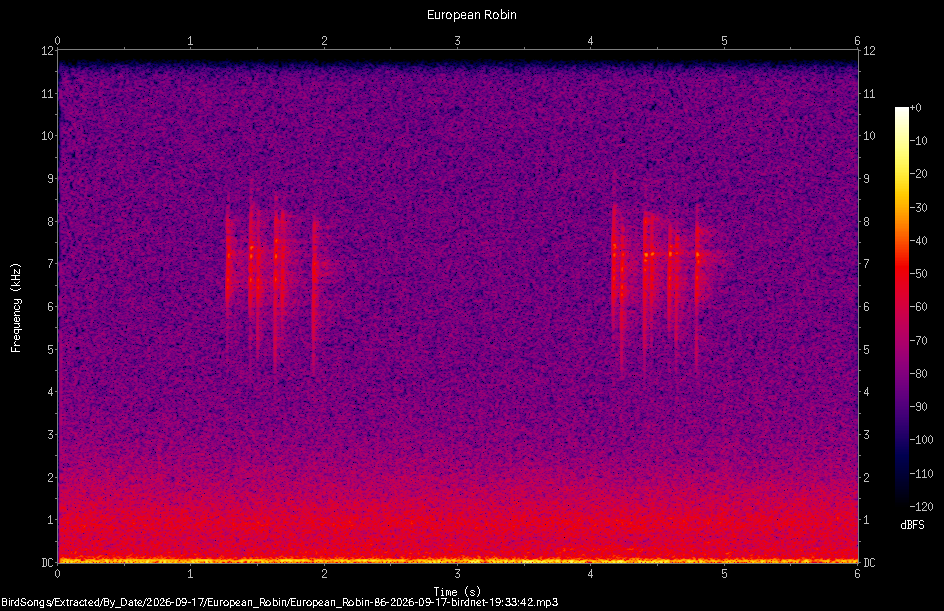

Bird Song (\(\Sigma\))
The image below is a representation of a robin’s call that was made by a Dundee based local community project Biodiversidee that tracks bird song using the Cornell Birdnet-Pi software. This image was taken here at the Botanic Garden setup by David Martin of the University of Dundee.
The bursts of vertical lines capture the high frequency chirps whilst the gap between the bursts represents the time between calls.

Each sound that you can hear is a pressure wave travelling through the air, picked up by your ear (or a microphone) as a single wiggling signal that changes moment to moment. Buried inside that one signal is a mixture of many pure tones at different frequencies, all layered on top of one another.
Press record on the app, then let a birdsong recording (or a whistle, or your own voice) play into the microphone for up to 10 seconds. The app then computes and displays the spectrogram of what it heard, entirely on your own device – nothing is uploaded anywhere.
- Whistle a single steady note – you should see one bright, mostly horizontal band.
- Play a recording of a bird call or try to recreate the spectrum of the robin’s call above by making appropriate sounds yourself.
- Compare a low-pitched call (e.g. a pigeon or crow) with a high-pitched one (e.g. a robin or a garden warbler) – notice how much of the picture is empty space once you’re looking at the wrong frequency band for a given bird.
- Try clapping or making a short sharp noise – broadband, non-tonal sounds like this light up across the whole frequency range at once, rather than concentrating in a narrow band.
How is the image generated?
A short window of any recorded sound can be decomposed into a sum of sine waves of different frequencies. The Fourier transform is the tool that performs this decomposition: feed it a chunk of samples, and it hands back how much of each frequency is present.
Do this over and over on a sliding window as the recording plays out, and stack the results side by side, and you get a spectrogram – a picture with time along one axis, frequency along the other, and colour showing how strong each frequency is at each moment. A pure whistled note shows up as a single bright horizontal band. A complex trill, with several frequencies sliding around at once, shows up as a tangle of curved streaks. Birdsong is a particularly rich example: many species sing well above the pitch of human speech, and pack in rapid frequency sweeps that are hard to pick out by ear but leap out immediately in a spectrogram.